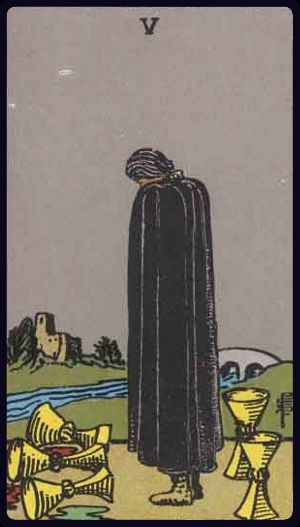

Major Arcana
The Fool, Mate, or Unwise Man. Court de Gebelin places it at the head of the whole series as the zero or negative which is presupposed by numeration, and as this is a simpler so also it is a better arrangement. It has been abandoned because in later times the cards have been attributed to the letters of the Hebrew alphabet, and there has been apparently some difficulty about allocating the zero symbol satisfactorily in a sequence of letters all of which signify numbers. In the present reference of the card to the letter Shin, which corresponds to 200, the difficulty or the unreason remains. The truth is that the real arrangement of the cards has never transpired. The Fool carries a wallet; he is looking over his shoulder and does not know that he is on the brink of a precipice; but a dog or other animal--some call it a tiger--is attacking him from behind, and he is hurried to his destruction unawares. Etteilla has given a justifiable variation of this card--as generally understood--in the form of a court jester, with cap, bells and motley garb. The other descriptions say that the wallet contains the bearer's follies and vices, which seems bourgeois and arbitrary.

The Magus, Magician, or juggler, the caster of the dice and mountebank, in the world of vulgar trickery. This is the colportage interpretation, and it has the same correspondence with the real symbolical meaning that the use of the Tarot in fortune-telling has with its mystic construction according to the secret science of symbolism. I should add that many independent students of the subject, following their own lights, have produced individual sequences of meaning in respect of the Trumps Major, and their lights are sometimes suggestive, but they are not the true lights. For example, Eliphas Levi says that the Magus signifies that unity which is the mother of numbers; others say that it is the Divine Unity; and one of the latest French commentators considers that in its general sense it is the will.
The High Priestess, the Pope Joan, or Female Pontiff; early expositors have sought to term this card the Mother, or Pope's Wife, which is opposed to the symbolism. It is sometimes held to represent the Divine Law and the Gnosis, in which case the Priestess corresponds to the idea of the Shekinah. She is the Secret Tradition and the higher sense of the instituted Mysteries.
The Empress, who is sometimes represented with full face, while her correspondence, the Emperor, is in profile. As there has been some tendency to ascribe a symbolical significance to this distinction, it seems desirable to say that it carries no inner meaning. The Empress has been connected with the ideas of universal fecundity and in a general sense with activity.
The Emperor, by imputation the spouse of the former. He is occasionally represented as wearing, in addition to his personal insignia, the stars or ribbons of some order of chivalry. I mention this to shew that the cards are a medley of old and new emblems. Those who insist upon the evidence of the one may deal, if they can, with the other. No effectual argument for the antiquity of a particular design can be drawn from the fact that it incorporates old material; but there is also none which can be based on sporadic novelties, the intervention of which may signify only the unintelligent hand of an editor or of a late draughtsman.
The High Priest or Hierophant, called also Spiritual Father, and more commonly and obviously the Pope. It seems even to have been named the Abbot, and then its correspondence, the High Priestess, was the Abbess or Mother of the Convent. Both are arbitrary names. The insignia of the figures are papal, and in such case the High Priestess is and can be only the Church, to whom Pope and priests are married by the spiritual rite of ordination. I think, however, that in its primitive form this card did not represent the Roman Pontiff.
The Lovers or Marriage. This symbol has undergone many variations, as might be expected from its subject. In the eighteenth century form, by which it first became known to the world of archaeological research, it is really a card of married life, shewing father and mother, with their child placed between them; and the pagan Cupid above, in the act of flying his shaft, is, of course, a misapplied emblem. The Cupid is of love beginning rather than of love in its fulness, guarding the fruit thereof. The card is said to have been entitled Simulacyum fidei, the symbol of conjugal faith, for which the rainbow as a sign of the covenant would have been a more appropriate concomitant. The figures are also held to have signified Truth, Honour and Love, but I suspect that this was, so to speak, the gloss of a commentator moralizing. It has these, but it has other and higher aspects.
The Chariot. This is represented in some extant codices as being drawn by two sphinxes, and the device is in consonance with the symbolism, but it must not be supposed that such was its original form; the variation was invented to support a particular historical hypothesis. In the eighteenth century white horses were yoked to the car. As regards its usual name, the lesser stands for the greater; it is really the King in his triumph, typifying, however, the victory which creates kingship as its natural consequence and not the vested royalty of the fourth card. M. Court de Gebelin said that it was Osiris Triumphing, the conquering sun in spring-time having vanquished the obstacles of winter. We know now that Osiris rising from the dead is not represented by such obvious symbolism. Other animals than horses have also been used to draw the currus triumphalis, as, for example, a lion and a leopard.
Strength or Fortitude. This is one of the cardinal virtues, of which I shall speak later. The female figure is usually represented as closing the mouth of a lion. In the earlier form which is printed by Court de Gebelin, she is obviously opening it. The first alternative is better symbolically, but either is an instance of strength in its conventional understanding, and conveys the idea of mastery. It has been said that the figure represents organic force, moral force and the principle of all force.
The Hermit, as he is termed in common parlance, stands next on the list; he is also the Capuchin, and in more philosophical language the Sage. He is said to be in search of that Truth which is located far off in the sequence, and of justice which has preceded him on the way. But this is a card of attainment, as we shall see later, rather than a card of quest. It is said also that his lantern contains the Light of Occult Science and that his staff is a Magic Wand. These interpretations are comparable in every respect to the divinatory and fortune-telling meanings with which I shall have to deal in their turn. The diabolism of both is that they are true after their own manner, but that they miss all the high things to which the Greater Arcana should be allocated. It is as if a man who knows in his heart that all roads lead to the heights, and that God is at the great height of all, should choose the way of perdition or the way of folly as the path of his own attainment. Eliphas Levi has allocated this card to Prudence, but in so doing he has been actuated by the wish to fill a gap which would otherwise occur in the symbolism. The four cardinal virtues are necessary to an idealogical sequence like the Trumps Major, but they must not be taken only in that first sense which exists for the use and consolation of him who in these days of halfpenny journalism is called the man in the street. In their proper understanding they are the correlatives of the counsels of perfection when these have been similarly re-expressed, and they read as follows: (a) Transcendental justice, the counter-equilibrium of the scales, when they have been overweighted so that they dip heavily on the side of God. The corresponding counsel is to use loaded dice when you play for high stakes with Diabolus. The axiom is Aut Deus, aut nihil. (b) Divine Ecstacy, as a counterpoise to something called Temperance, the sign of which is, I believe, the extinction of lights in the tavern. The corresponding counsel is to drink only of new wine in the Kingdom of the Father, because God is all in all. The axiom is that man being a reasonable being must get intoxicated with God; the imputed case in point is Spinoza. (c) The state of Royal Fortitude, which is the state of a Tower of Ivory and a House of Gold, but it is God and not the man who has become Turris fortitudinis a facie inimici, and out of that House the enemy has been cast. The corresponding counsel is that a man must not spare himself even in the presence of death, but he must be certain that his sacrifice shall be-of any open course-the best that will ensure his end. The axiom is that the strength which is raised to such a degree that a man dares lose himself shall shew him how God is found, and as to such refuge--dare therefore and learn. (d) Prudence is the economy which follows the line of least resistance, that the soul may get back whence it came. It is a doctrine of divine parsimony and conservation of energy, because of the stress, the terror and the manifest impertinences of this life. The corresponding counsel is that true prudence is concerned with the one thing needful, and the axiom is: Waste not, want not. The conclusion of the whole matter is a business proposition founded on the law of exchange: You cannot help getting what you seek in respect of the things that are Divine: it is the law of supply and demand. I have mentioned these few matters at this point for two simple reasons: (a) because in proportion to the impartiality of the mind it seems sometimes more difficult to determine whether it is vice or vulgarity which lays waste the present world more piteously; (b) because in order to remedy the imperfections of the old notions it is highly needful, on occasion, to empty terms and phrases of their accepted significance, that they may receive a new and more adequate meaning.
The Wheel of Fortune. There is a current Manual of Cartomancy which has obtained a considerable vogue in England, and amidst a great scattermeal of curious things to no purpose has intersected a few serious subjects. In its last and largest edition it treats in one section of the Tarot; which--if I interpret the author rightly--it regards from beginning to end as the Wheel of Fortune, this expression being understood in my own sense. I have no objection to such an inclusive though conventional description; it obtains in all the worlds, and I wonder that it has not been adopted previously as the most appropriate name on the side of common fortune-telling. It is also the title of one of the Trumps Major--that indeed of our concern at the moment, as my sub-title shews. Of recent years this has suffered many fantastic presentations and one hypothetical reconstruction which is suggestive in its symbolism. The wheel has seven radii; in the eighteenth century the ascending and descending animals were really of nondescript character, one of them having a human head. At the summit was another monster with the body of an indeterminate beast, wings on shoulders and a crown on head. It carried two wands in its claws. These are replaced in the reconstruction by a Hermanubis rising with the wheel, a Sphinx couchant at the summit and a Typhon on the descending side. Here is another instance of an invention in support of a hypothesis; but if the latter be set aside the grouping is symbolically correct and can pass as such.
Justice. That the Tarot, though it is of all reasonable antiquity, is not of time immemorial, is shewn by this card, which could have been presented in a much more archaic manner. Those, however, who have gifts of discernment in matters of this kind will not need to be told that age is in no sense of the essence of the consideration; the Rite of Closing the Lodge in the Third Craft Grade of Masonry may belong to the late eighteenth century, but the fact signifies nothing; it is still the summary of all the instituted and official Mysteries. The female figure of the eleventh card is said to be Astraea, who personified the same virtue and is represented by the same symbols. This goddess notwithstanding, and notwithstanding the vulgarian Cupid, the Tarot is not of Roman mythology, or of Greek either. Its presentation of justice is supposed to be one of the four cardinal virtues included in the sequence of Greater Arcana; but, as it so happens, the fourth emblem is wanting, and it became necessary for the commentators to discover it at all costs. They did what it was possible to do, and yet the laws of research have never succeeded in extricating the missing Persephone under the form of Prudence. Court de Gebelin attempted to solve the difficulty by a tour de force, and believed that he had extracted what he wanted from the symbol of the Hanged Man--wherein he deceived himself. The Tarot has, therefore, its justice, its Temperance also and its Fortitude, but--owing to a curious omission--it does not offer us any type of Prudence, though it may be admitted that, in some respects, the isolation of the Hermit, pursuing a solitary path by the light of his own lamp, gives, to those who can receive it, a certain high counsel in respect of the via prudentiae.
The Hanged Man. This is the symbol which is supposed to represent Prudence, and Eliphas Levi says, in his most shallow and plausible manner, that it is the adept bound by his engagements. The figure of a man is suspended head-downwards from a gibbet, to which he is attached by a rope about one of his ankles. The arms are bound behind him, and one leg is crossed over the other. According to another, and indeed the prevailing interpretation, he signifies sacrifice, but all current meanings attributed to this card are cartomancists' intuitions, apart from any real value on the symbolical side. The fortune-tellers of the eighteenth century who circulated Tarots, depict a semi-feminine youth in jerkin, poised erect on one foot and loosely attached to a short stake driven into the ground.
Death. The method of presentation is almost invariable, and embodies a bourgeois form of symbolism. The scene is the field of life, and amidst ordinary rank vegetation there are living arms and heads protruding from the ground. One of the heads is crowned, and a skeleton with a great scythe is in the act of mowing it. The transparent and unescapable meaning is death, but the alternatives allocated to the symbol are change and transformation. Other heads have been swept from their place previously, but it is, in its current and patent meaning, more especially a card of the death of Kings. In the exotic sense it has been said to signify the ascent of the spirit in the divine spheres, creation and destruction, perpetual movement, and so forth.
Temperance. The winged figure of a female--who, in opposition to all doctrine concerning the hierarchy of angels, is usually allocated to this order of ministering spirits--is pouring liquid from one pitcher to another. In his last work on the Tarot, Dr. Papus abandons the traditional form and depicts a woman wearing an Egyptian head-dress. The first thing which seems clear on the surface is that the entire symbol has no especial connexion with Temperance, and the fact that this designation has always obtained for the card offers a very obvious instance of a meaning behind meaning, which is the title in chief to consideration in respect of the Tarot as a whole.
The Devil. In the eighteenth century this card seems to have been rather a symbol of merely animal impudicity. Except for a fantastic head-dress, the chief figure is entirely naked; it has bat-like wings, and the hands and feet are represented by the claws of a bird. In the right hand there is a sceptre terminating in a sign which has been thought to represent fire. The figure as a whole is not particularly evil; it has no tail, and the commentators who have said that the claws are those of a harpy have spoken at random. There is no better ground for the alternative suggestion that they are eagle's claws. Attached, by a cord depending from their collars, to the pedestal on which the figure is mounted, are two small demons, presumably male and female. These are tailed, but not winged. Since 1856 the influence of Eliphas Levi and his doctrine of occultism has changed the face of this card, and it now appears as a pseudo-Baphometic figure with the head of a goat and a great torch between the horns; it is seated instead of erect, and in place of the generative organs there is the Hermetic caduceus. In Le Tarot Divinatoire of Papus the small demons are replaced by naked human beings, male and female ' who are yoked only to each other. The author may be felicitated on this improved symbolism.
The Tower struck by Lightning. Its alternative titles are: Castle of Plutus, God's House and the Tower of Babel. In the last case, the figures falling therefrom are held to be Nimrod and his minister. It is assuredly a card of confusion, and the design corresponds, broadly speaking, to any of the designations except Maison Dieu, unless we are to understand that the House of God has been abandoned and the veil of the temple rent. It is a little surprising that the device has not so far been allocated to the destruction Of Solomon's Temple, when the lightning would symbolize the fire and sword with which that edifice was visited by the King of the Chaldees.
The Star, Dog-Star, or Sirius, also called fantastically the Star of the Magi. Grouped about it are seven minor luminaries, and beneath it is a naked female figure, with her left knee upon the earth and her right foot upon the water. She is in the act of pouring fluids from two vessels. A bird is perched on a tree near her; for this a butterfly on a rose has been substituted in some later cards. So also the Star has been called that of Hope. This is one of the cards which Court de Gebelin describes as wholly Egyptian-that is to say, in his own reverie.
The Moon. Some eighteenth-century cards shew the luminary on its waning side; in the debased edition of Etteilla, it is the moon at night in her plenitude, set in a heaven of stars; of recent years the moon is shewn on the side of her increase. In nearly all presentations she is shining brightly and shedding the moisture of fertilizing dew in great drops. Beneath there are two towers, between which a path winds to the verge of the horizon. Two dogs, or alternatively a wolf and dog, are baying at the moon, and in the foreground there is water, through which a crayfish moves towards the land.
The Sun. The luminary is distinguished in older cards by chief rays that are waved and salient alternately and by secondary salient rays. It appears to shed its influence on earth not only by light and heat, but--like the moon--by drops of dew. Court de Gebelin termed these tears of gold and of pearl, just as he identified the lunar dew with the tears of Isis. Beneath the dog-star there is a wall suggesting an enclosure-as it might be, a walled garden-wherein are two children, either naked or lightly clothed, facing a water, and gambolling, or running hand in hand. Eliphas Levi says that these are sometimes replaced by a spinner unwinding destinies, and otherwise by a much better symbol-a naked child mounted on a white horse and displaying a scarlet standard.
The Last judgment. I have spoken of this symbol already, the form of which is essentially invariable, even in the Etteilla set. An angel sounds his trumpet per sepulchra regionum, and the dead arise. It matters little that Etteilla omits the angel, or that Dr. Papus substitutes a ridiculous figure, which is, however, in consonance with the general motive of that Tarot set which accompanies his latest work. Before rejecting the transparent interpretation of the symbolism which is conveyed by the name of the card and by the picture which it presents to the eye, we should feel very sure of our ground. On the surface, at least, it is and can be only the resurrection of that triad--father, mother, child-whom we have met with already in the eighth card. M. Bourgeat hazards the suggestion that esoterically it is the symbol of evolution--of which it carries none of the signs. Others say that it signifies renewal, which is obvious enough; that it is the triad of human life; that it is the "generative force of the earth... and eternal life." Court de Gebelin makes himself impossible as usual, and points out that if the grave-stones were removed it could be accepted as a symbol of creation.
The World, the Universe, or Time. The four living creatures of the Apocalypse and Ezekiel's vision, attributed to the evangelists in Christian symbolism, are grouped about an elliptic garland, as if it were a chain of flowers intended to symbolize all sensible things; within this garland there is the figure of a woman, whom the wind has girt about the loins with a light scarf, and this is all her vesture. She is in the act of dancing, and has a wand in either hand. It is eloquent as an image of the swirl of the sensitive life, of joy attained in the body, of the soul's intoxication in the earthly paradise, but still guarded by the Divine Watchers, as if by the powers and the graces of the Holy Name, Tetragammaton, JVHV--those four ineffable letters which are sometimes attributed to the mystical beasts. Eliphas Levi calls the garland a crown, and reports that the figure represents Truth. Dr. Papus connects it with the Absolute and the realization of the Great Work; for yet others it is a symbol of humanity and the eternal reward of a life that has been spent well. It should be noted that in the four quarters of the garland there are four flowers distinctively marked. According to P. Christian, the garland should be formed of roses, and this is the kind of chain which Eliphas Levi says is less easily broken than a chain of iron. Perhaps by antithesis, but for the same reason, the iron crown of Peter may he more lightly on the heads of sovereign pontiffs than the crown of gold on kings.
Minor Arcana
Wands
The physical and emotional nature to which this card is attributed is dark, ardent, lithe, animated, impassioned, noble. The King uplifts a flowering wand, and wears, like his three correspondences in the remaining suits, what is called a cap of maintenance beneath his crown. He connects with the symbol of the lion, which is emblazoned on the back of his throne. Divinatory Meanings: Dark man, friendly, countryman, generally married, honest and conscientious. The card always signifies honesty, and may mean news concerning an unexpected heritage to fall in before very long. Reversed: Good, but severe; austere, yet tolerant.
The Wands throughout this suit are always in leaf, as it is a suit of life and animation. Emotionally and otherwise, the Queen's personality corresponds to that of the King, but is more magnetic. Divinatory Meanings: A dark woman, countrywoman, friendly, chaste, loving, honourable. If the card beside her signifies a man, she is well disposed towards him; if a woman, she is interested in the Querent. Also, love of money, or a certain success in business. Reversed: Good, economical, obliging, serviceable. Signifies also--but in certain positions and in the neighbourhood of other cards tending in such directions--opposition, jealousy, even deceit and infidelity.
He is shewn as if upon a journey, armed with a short wand, and although mailed is not on a warlike errand. He is passing mounds or pyramids. The motion of the horse is a key to the character of its rider, and suggests the precipitate mood, or things connected therewith. Divinatory Meanings: Departure, absence, flight, emigration. A dark young man, friendly. Change of residence. Reversed: Rupture, division, interruption, discord.
In a scene similar to the former, a young man stands in the act of proclamation. He is unknown but faithful, and his tidings are strange. Divinatory Meanings: Dark young man, faithful, a lover, an envoy, a postman. Beside a man, he will bear favourable testimony concerning him. A dangerous rival, if followed by the Page of Cups. Has the chief qualities of his suit. He may signify family intelligence. Reversed: Anecdotes, announcements, evil news. Also indecision and the instability which accompanies it.
A man oppressed by the weight of the ten staves which he is carrying. Divinatory Meanings: A card of many significances, and some of the readings cannot be harmonized. I set aside that which connects it with honour and good faith. The chief meaning is oppression simply, but it is also fortune, gain, any kind of success, and then it is the oppression of these things. It is also a card of false-seeming, disguise, perfidy. The place which the figure is approaching may suffer from the rods that he carries. Success is stultified if the Nine of Swords follows, and if it is a question of a lawsuit, there will be certain loss. Reversed: Contrarieties, difficulties, intrigues, and their analogies.
The figure leans upon his staff and has an expectant look, as if awaiting an enemy. Behind are eight other staves--erect, in orderly disposition, like a palisade. Divinatory Meanings: The card signifies strength in opposition. If attacked, the person will meet an onslaught boldly; and his build shews, that he may prove a formidable antagonist. With this main significance there are all its possible adjuncts--delay, suspension, adjournment. Reversed: Obstacles, adversity, calamity.
The card represents motion through the immovable-a flight of wands through an open country; but they draw to the term of their course. That which they signify is at hand; it may be even on the threshold. Divinatory Meanings: Activity in undertakings, the path of such activity, swiftness, as that of an express messenger; great haste, great hope, speed towards an end which promises assured felicity; generally, that which is on the move; also the arrows of love. Reversed: Arrows of jealousy, internal dispute, stingings of conscience, quarrels; and domestic disputes for persons who are married.
A young man on a craggy eminence brandishing a staff; six other staves are raised towards him from below. Divinatory Meanings: It is a card of valour, for, on the surface, six are attacking one, who has, however, the vantage position. On the intellectual plane, it signifies discussion, wordy strife; in business--negotiations, war of trade, barter, competition. It is further a card of success, for the combatant is on the top and his enemies may be unable to reach him. Reversed: Perplexity, embarrassments, anxiety. It is also a caution against indecision.
A laurelled horseman bears one staff adorned with a laurel crown; footmen with staves are at his side. Divinatory Meanings: The card has been so designed that it can cover several significations; on the surface, it is a victor triumphing, but it is also great news, such as might be carried in state by the King's courier; it is expectation crowned with its own desire, the crown of hope, and so forth. Reversed: Apprehension, fear, as of a victorious enemy at the gate; treachery, disloyalty, as of gates being opened to the enemy; also indefinite delay.
A posse of youths, who are brandishing staves, as if in sport or strife. It is mimic warfare, and hereto correspond the Divinatory Meanings: Imitation, as, for example, sham fight, but also the strenuous competition and struggle of the search after riches and fortune. In this sense it connects with the battle of life. Hence some attributions say that it is a card of gold, gain, opulence. Reversed: Litigation, disputes, trickery, contradiction.
From the four great staves planted in the foreground there is a great garland suspended; two female figures uplift nosegays; at their side is a bridge over a moat, leading to an old manorial house. Divinatory Meanings: They are for once almost on the surface--country life, haven of refuge, a species of domestic harvest-home, repose, concord, harmony, prosperity, peace, and the perfected work of these. Reversed: The meaning remains unaltered; it is prosperity, increase, felicity, beauty, embellishment.
A calm, stately personage, with his back turned, looking from a cliff's edge at ships passing over the sea. Three staves are planted in the ground, and he leans slightly on one of them. Divinatory Meanings: He symbolizes established strength, enterprise, effort, trade, commerce, discovery; those are his ships, bearing his merchandise, which are sailing over the sea. The card also signifies able co-operation in business, as if the successful merchant prince were looking from his side towards yours with a view to help you. Reversed: The end of troubles, suspension or cessation of adversity, toil and disappointment.
A tall man looks from a battlemented roof over sea and shore; he holds a globe in his right hand, while a staff in his left rests on the battlement; another is fixed in a ring. The Rose and Cross and Lily should be noticed on the left side. Divinatory Meanings: Between the alternative readings there is no marriage possible; on the one hand, riches, fortune, magnificence; on the other, physical suffering, disease, chagrin, sadness, mortification. The design gives one suggestion; here is a lord overlooking his dominion and alternately contemplating a globe; it looks like the malady, the mortification, the sadness of Alexander amidst the grandeur of this world's wealth. Reversed: Surprise, wonder, enchantment, emotion, trouble, fear.
A hand issuing from a cloud grasps a stout wand or club. Divinatory Meanings: Creation, invention, enterprise, the powers which result in these; principle, beginning, source; birth, family, origin, and in a sense the virility which is behind them; the starting point of enterprises; according to another account, money, fortune, inheritance. Reversed: Fall, decadence, ruin, perdition, to perish also a certain clouded joy.
Cups

He holds a short sceptre in his left hand and a great cup in his right; his throne is set upon the sea; on one side a ship is riding and on the other a dolphin is leaping. The implicit is that the Sign of the Cup naturally refers to water, which appears in all the court cards. Divinatory Meanings: Fair man, man of business, law, or divinity; responsible, disposed to oblige the Querent; also equity, art and science, including those who profess science, law and art; creative intelligence. Reversed: Dishonest, double-dealing man; roguery, exaction, injustice, vice, scandal, pillage, considerable loss.
Beautiful, fair, dreamy--as one who sees visions in a cup. This is, however, only one of her aspects; she sees, but she also acts, and her activity feeds her dream. Divinatory Meanings: Good, fair woman; honest, devoted woman, who will do service to the Querent; loving intelligence, and hence the gift of vision; success, happiness, pleasure; also wisdom, virtue; a perfect spouse and a good mother. Reversed: The accounts vary; good woman; otherwise, distinguished woman but one not to be trusted; perverse woman; vice, dishonour, depravity.

Graceful, but not warlike; riding quietly, wearing a winged helmet, referring to those higher graces of the imagination which sometimes characterize this card. He too is a dreamer, but the images of the side of sense haunt him in his vision. Divinatory Meanings: Arrival, approach--sometimes that of a messenger; advances, proposition, demeanour, invitation, incitement. Reversed: Trickery, artifice, subtlety, swindling, duplicity, fraud.
A fair, pleasing, somewhat effeminate page, of studious and intent aspect, contemplates a fish rising from a cup to look at him. It is the pictures of the mind taking form. Divinatory Meanings: Fair young man, one impelled to render service and with whom the Querent will be connected; a studious youth; news, message; application, reflection, meditation; also these things directed to business. Reversed: Taste, inclination, attachment, seduction, deception, artifice.
Appearance of Cups in a rainbow; it is contemplated in wonder and ecstacy by a man and woman below, evidently husband and wife. His right arm is about her; his left is raised upward; she raises her right arm. The two children dancing near them have not observed the prodigy but are happy after their own manner. There is a home-scene beyond. Divinatory Meanings: Contentment, repose of the entire heart; the perfection of that state; also perfection of human love and friendship; if with several picture-cards, a person who is taking charge of the Querent's interests; also the town, village or country inhabited by the Querent. Reversed: Repose of the false heart, indignation, violence.

A goodly personage has feasted to his heart's content, and abundant refreshment of wine is on the arched counter behind him, seeming to indicate that the future is also assured. The picture offers the material side only, but there are other aspects. Divinatory Meanings: Concord, contentment, physical bien-etre; also victory, success, advantage; satisfaction for the Querent or person for whom the consultation is made. Reversed: Truth, loyalty, liberty; but the readings vary and include mistakes, imperfections, etc.
A man of dejected aspect is deserting the cups of his felicity, enterprise, undertaking or previous concern. Divinatory Meanings: The card speaks for itself on the surface, but other readings are entirely antithetical--giving joy, mildness, timidity, honour, modesty. In practice, it is usually found that the card shews the decline of a matter, or that a matter which has been thought to be important is really of slight consequence--either for good or evil. Reversed: Great joy, happiness, feasting.
Strange chalices of vision, but the images are more especially those of the fantastic spirit. Divinatory Meanings: Fairy favours, images of reflection, sentiment, imagination, things seen in the glass of contemplation; some attainment in these degrees, but nothing permanent or substantial is suggested. Reversed: Desire, will, determination, project.
Children in an old garden, their cups filled with flowers. Divinatory Meanings: A card of the past and of memories, looking back, as--for example--on childhood; happiness, enjoyment, but coming rather from the past; things that have vanished. Another reading reverses this, giving new relations, new knowledge, new environment, and then the children are disporting in an unfamiliar precinct. Reversed: The future, renewal, that which will come to pass presently.

A dark, cloaked figure, looking sideways at three prone cups two others stand upright behind him; a bridge is in the background, leading to a small keep or holding. Divanatory Meanings: It is a card of loss, but something remains over; three have been taken, but two are left; it is a card of inheritance, patrimony, transmission, but not corresponding to expectations; with some interpreters it is a card of marriage, but not without bitterness or frustration. Reversed: News, alliances, affinity, consanguinity, ancestry, return, false projects.
A young man is seated under a tree and contemplates three cups set on the grass before him; an arm issuing from a cloud offers him another cup. His expression notwithstanding is one of discontent with his environment. Divinatory Meanings: Weariness, disgust, aversion, imaginary vexations, as if the wine of this world had caused satiety only; another wine, as if a fairy gift, is now offered the wastrel, but he sees no consolation therein. This is also a card of blended pleasure. Reversed: Novelty, presage, new instruction, new relations.
Maidens in a garden-ground with cups uplifted, as if pledging one another. Divinatory Meanings: The conclusion of any matter in plenty, perfection and merriment; happy issue, victory, fulfilment, solace, healing, Reversed: Expedition, dispatch, achievement, end. It signifies also the side of excess in physical enjoyment, and the pleasures of the senses.
A youth and maiden are pledging one another, and above their cups rises the Caduceus of Hermes, between the great wings of which there appears a lion's head. It is a variant of a sign which is found in a few old examples of this card. Some curious emblematical meanings are attached to it, but they do not concern us in this place. Divinatory Meanings: Love, passion, friendship, affinity, union, concord, sympathy, the interrelation of the sexes, and--as a suggestion apart from all offices of divination--that desire which is not in Nature, but by which Nature is sanctified.
The waters are beneath, and thereon are water-lilies; the hand issues from the cloud, holding in its palm the cup, from which four streams are pouring; a dove, bearing in its bill a cross-marked Host, descends to place the Wafer in the Cup; the dew of water is falling on all sides. It is an intimation of that which may lie behind the Lesser Arcana. Divinatory Meanings: House of the true heart, joy, content, abode, nourishment, abundance, fertility; Holy Table, felicity hereof. Reversed: House of the false heart, mutation, instability, revolution.
Swords
He sits in judgment, holding the unsheathed sign of his suit. He recalls, of course, the conventional Symbol of justice in the Trumps Major, and he may represent this virtue, but he is rather the power of life and death, in virtue of his office. Divinatory Meanings: Whatsoever arises out of the idea of judgment and all its connexions-power, command, authority, militant intelligence, law, offices of the crown, and so forth. Reversed: Cruelty, perversity, barbarity, perfidy, evil intention.
Her right hand raises the weapon vertically and the hilt rests on an arm of her royal chair the left hand is extended, the arm raised her countenance is severe but chastened; it suggests familiarity with sorrow. It does not represent mercy, and, her sword notwithstanding, she is scarcely a symbol of power. Divinatory Meanings: Widowhood, female sadness and embarrassment, absence, sterility, mourning, privation, separation. Reversed: Malice, bigotry, artifice, prudery, bale, deceit.
He is riding in full course, as if scattering his enemies. In the design he is really a prototypical hero of romantic chivalry. He might almost be Galahad, whose sword is swift and sure because he is clean of heart. Divinatory Meanings: Skill, bravery, capacity, defence, address, enmity, wrath, war, destruction, opposition, resistance, ruin. There is therefore a sense in which the card signifies death, but it carries this meaning only in its proximity to other cards of fatality. Reversed: Imprudence, incapacity, extravagance.
A lithe, active figure holds a sword upright in both hands, while in the act of swift walking. He is passing over rugged land, and about his way the clouds are collocated wildly. He is alert and lithe, looking this way and that, as if an expected enemy might appear at any moment. Divinatory Meanings: Authority, overseeing, secret service, vigilance, spying, examination, and the qualities thereto belonging. Reversed: More evil side of these qualities; what is unforeseen, unprepared state; sickness is also intimated.

A prostrate figure, pierced by all the swords belonging to the card. Divinatory Meanings: Whatsoever is intimated by the design; also pain, affliction, tears, sadness, desolation. It is not especially a card of violent death. Reversed: Advantage, profit, success, favour, but none of these are permanent; also power and authority.
One seated on her couch in lamentation, with the swords over her. She is as one who knows no sorrow which is like unto hers. It is a card of utter desolation. Divinatory Meanings: Death, failure, miscarriage, delay, deception, disappointment, despair. Reversed: Imprisonment, suspicion, doubt, reasonable fear, shame.
A woman, bound and hoodwinked, with the swords of the card about her. Yet it is rather a card of temporary durance than of irretrievable bondage. Divinatory Meanings: Bad news, violent chagrin, crisis, censure, power in trammels, conflict, calumny; also sickness. Reversed: Disquiet, difficulty, opposition, accident, treachery; what is unforeseen; fatality.
A man in the act of carrying away five swords rapidly; the two others of the card remain stuck in the ground. A camp is close at hand. Divinatory Meanings: Design, attempt, wish, hope, confidence; also quarrelling, a plan that may fail, annoyance. The design is uncertain in its import, because the significations are widely at variance with each other. Reversed: Good advice, counsel, instruction, slander, babbling.
A ferryman carrying passengers in his punt to the further shore. The course is smooth, and seeing that the freight is light, it may be noted that the work is not beyond his strength. Divinatory Meanings: journey by water, route, way, envoy, commissionary, expedient. Reversed: Declaration, confession, publicity; one account says that it is a proposal of love.
A disdainful man looks after two retreating and dejected figures. Their swords lie upon the ground. He carries two others on his left shoulder, and a third sword is in his right hand, point to earth. He is the master in possession of the field. Divinatory Meanings: Degradation, destruction, revocation, infamy, dishonour, loss, with the variants and analogues of these. Reversed: The same; burial and obsequies.
The effigy of a knight in the attitude of prayer, at full length upon his tomb. Divinatory Meanings: Vigilance, retreat, solitude, hermit's repose, exile, tomb and coffin. It is these last that have suggested the design. Reversed: Wise administration, circumspection, economy, avarice, precaution, testament.
Three swords piercing a heart; cloud and rain behind. Divinatory Meanings: Removal, absence, delay, division, rupture, dispersion, and all that the design signifies naturally, being too simple and obvious to call for specific enumeration. Reversed: Mental alienation, error, loss, distraction, disorder, confusion.
A hoodwinked female figure balances two swords upon her shoulders. Divinatory Meanings: Conformity and the equipoise which it suggests, courage, friendship, concord in a state of arms; another reading gives tenderness, affection, intimacy. The suggestion of harmony and other favourable readings must be considered in a qualified manner, as Swords generally are not symbolical of beneficent forces in human affairs. Reversed: Imposture, falsehood, duplicity, disloyalty.
A hand issues from a cloud, grasping as word, the point of which is encircled by a crown. Divinatory Meanings: Triumph, the excessive degree in everything, conquest, triumph of force. It is a card of great force, in love as well as in hatred. The crown may carry a much higher significance than comes usually within the sphere of fortune-telling. Reversed: The same, but the results are disastrous; another account says--conception, childbirth, augmentation, multiplicity.
The figure calls for no special description the face is rather dark, suggesting also courage, but somewhat lethargic in tendency. The bull's head should be noted as a recurrent symbol on the throne. The sign of this suit is represented throughout as engraved or blazoned with the pentagram, typifying the correspondence of the four elements in human nature and that by which they may be governed. In many old Tarot packs this suit stood for current coin, money, deniers. I have not invented the substitution of pentacles and I have no special cause to sustain in respect of the alternative. But the consensus of divinatory meanings is on the side of some change, because the cards do not happen to deal especially with questions of money. Divinatory Meanings: Valour, realizing intelligence, business and normal intellectual aptitude, sometimes mathematical gifts and attainments of this kind; success in these paths. Reversed: Vice, weakness, ugliness, perversity, corruption, peril.
The face suggests that of a dark woman, whose qualities might be summed up in the idea of greatness of soul; she has also the serious cast of intelligence; she contemplates her symbol and may see worlds therein. Divinatory Meanings: Opulence, generosity, magnificence, security, liberty. Reversed: Evil, suspicion, suspense, fear, mistrust.
He rides a slow, enduring, heavy horse, to which his own aspect corresponds. He exhibits his symbol, but does not look therein. Divinatory Meanings: Utility, serviceableness, interest, responsibility, rectitude-all on the normal and external plane. Reversed: inertia, idleness, repose of that kind, stagnation; also placidity, discouragement, carelessness.

A youthful figure, looking intently at the pentacle which hovers over his raised hands. He moves slowly, insensible of that which is about him. Divinatory Meanings: Application, study, scholarship, reflection another reading says news, messages and the bringer thereof; also rule, management. Reversed: Prodigality, dissipation, liberality, luxury; unfavourable news.
A man and woman beneath an archway which gives entrance to a house and domain. They are accompanied by a child, who looks curiously at two dogs accosting an ancient personage seated in the foreground. The child's hand is on one of them. Divinatory Meanings: Gain, riches; family matters, archives, extraction, the abode of a family. Reversed: Chance, fatality, loss, robbery, games of hazard; sometimes gift, dowry, pension.
A woman, with a bird upon her wrist, stands amidst a great abundance of grapevines in the garden of a manorial house. It is a wide domain, suggesting plenty in all things. Possibly it is her own possession and testifies to material well-being. Divinatory Meanings: Prudence, safety, success, accomplishment, certitude, discernment. Reversed: Roguery, deception, voided project, bad faith.
An artist in stone at his work, which he exhibits in the form of trophies. Divinatory Meanings: Work, employment, commission, craftsmanship, skill in craft and business, perhaps in the preparatory stage. Reversed: Voided ambition, vanity, cupidity, exaction, usury. It may also signify the possession of skill, in the sense of the ingenious mind turned to cunning and intrigue.
A young man, leaning on his staff, looks intently at seven pentacles attached to a clump of greenery on his right; one would say that these were his treasures and that his heart was there. Divinatory Meanings: These are exceedingly contradictory; in the main, it is a card of money, business, barter; but one reading gives altercation, quarrels--and another innocence, ingenuity, purgation. Reversed: Cause for anxiety regarding money which it may be proposed to lend.
A person in the guise of a merchant weighs money in a pair of scales and distributes it to the needy and distressed. It is a testimony to his own success in life, as well as to his goodness of heart. Divinatory Meanings: Presents, gifts, gratification another account says attention, vigilance now is the accepted time, present prosperity, etc. Reversed: Desire, cupidity, envy, jealousy, illusion.
Two mendicants in a snow-storm pass a lighted casement. Divinatory Meanings: The card foretells material trouble above all, whether in the form illustrated--that is, destitution--or otherwise. For some cartomancists, it is a card of love and lovers-wife, husband, friend, mistress; also concordance, affinities. These alternatives cannot be harmonized. Reversed: Disorder, chaos, ruin, discord, profligacy.
A crowned figure, having a pentacle over his crown, clasps another with hands and arms; two pentacles are under his feet. He holds to that which he has. Divinatory Meanings: The surety of possessions, cleaving to that which one has, gift, legacy, inheritance. Reversed: Suspense, delay, opposition.
A sculptor at his work in a monastery. Compare the design which illustrates the Eight of Pentacles. The apprentice or amateur therein has received his reward and is now at work in earnest. Divinatory Meanings: Metier, trade, skilled labour; usually, however, regarded as a card of nobility, aristocracy, renown, glory. Reversed: Mediocrity, in work and otherwise, puerility, pettiness, weakness.
A young man, in the act of dancing, has a pentacle in either hand, and they are joined by that endless cord which is like the number 8 reversed. Divinatory Meanings: On the one hand it is represented as a card of gaiety, recreation and its connexions, which is the subject of the design; but it is read also as news and messages in writing, as obstacles, agitation, trouble, embroilment. Reversed: Enforced gaiety, simulated enjoyment, literal sense, handwriting, composition, letters of exchange.
hand--issuing, as usual, from a cloud--holds up a pentacle. Divinatory Meanings: Perfect contentment, felicity, ecstasy; also speedy intelligence; gold. Reversed: The evil side of wealth, bad intelligence; also great riches. In any case it shews prosperity, comfortable material conditions, but whether these are of advantage to the possessor will depend on whether the card is reversed or not.